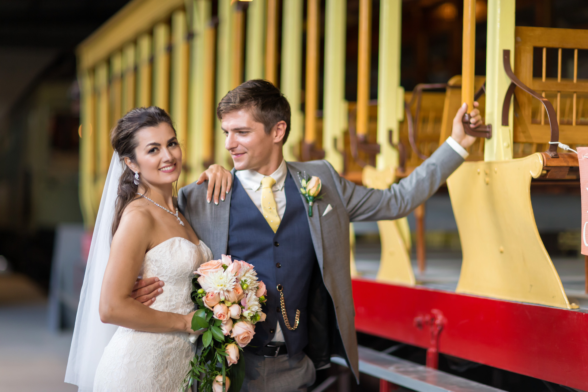

August Sixth 2016

Then Almitra spoke again and said...
‘And what of Marriage, master?’
And he answered saying:
You were born together,
and together you shall be forevermore.
You shall be together when the white wings
of death scatter your days.
Aye, you shall be together even in the
silent memory of God.
But let there be spaces in your togetherness,
And let the winds of the heavens dance between you.
Love one another, but make not a bond of love.
Let it rather be a moving sea between
the shores of your souls.
Fill each other's cup but drink not from one cup.
Give one another of your bread but eat not from the same loaf.
Sing and dance together and be joyous,
but let each of you be alone,
Even as the strings of a lute are alone
though they quiver with the same music.
Give your hearts, but not into each other's keeping.
For only the hand of Life can contain your hearts.
And stand together, yet not too near together.
For the pillars of the temple stand apart,
And the oak tree and the cypress
grow not in each other's shadow.
— from Khalil Gibran's The Prophet (1923)
O, lasa-mi capul meu pe sin,
Iubito, sã se culce
Sub raza ochiului senin
Si negrait de dulce;
Cu farmecul luminii reci
Gindirile strabate-mi,
Revarsa liniste de veci
Pe noaptea mea de patimi.
Si de asupra mea ramii
Durerea mea de-o curma,
Cãci esti iubirea mea dentii
Si visul meu din urma.
Translation:
O, let me lay in lover's wise
My head upon your breast,
Beneath the wonder of your eyes,
In soft and fragrant rest.
In mystery's enchanted light
Pervade me with your charm,
And flood my soul through passion's night
With time's eternal calm.
O, quench my longing's eager thirst,
My aching doubts overcast,
For you to me are love the first,
And of my dreams the last.
— from Mihai Eminescu's Luceafărul (1883)
Blessed are the poor in spirit,
for theirs is the kingdom of heaven.
Blessed are those who mourn,
for they will be comforted.
Blessed are the meek,
for they will inherit the earth.
Blessed are those who hunger and thirst for righteousness,
for they will be filled.
Blessed are the merciful,
for they will be shown mercy.
Blessed are the pure in heart,
for they will see God.
Blessed are the peacemakers,
for they will be called children of God.
Blessed are those who are persecuted because of righteousness,
for theirs is the kingdom of heaven.
— Matthew 5:3-10 (The Beatitudes)
Your Hand in Mine by Explosions in the Sky (processional)
Golden Porsche by Mogwai (signing)
Hoppípolla by Sigur Rós (recessional)
It's Oh So Quiet by Björk (first dance)
All of our family and friends who joined us,
The staff of Terrace on the Green,
Jamieson Dean (photography),
Katherine Kwan (videography),
Julian Willoughby of RJM Sounds,
Reverend Michael Fleming, and
Elizabeth Jaworska at the Four Points by Sheraton Mississauga Meadowvale